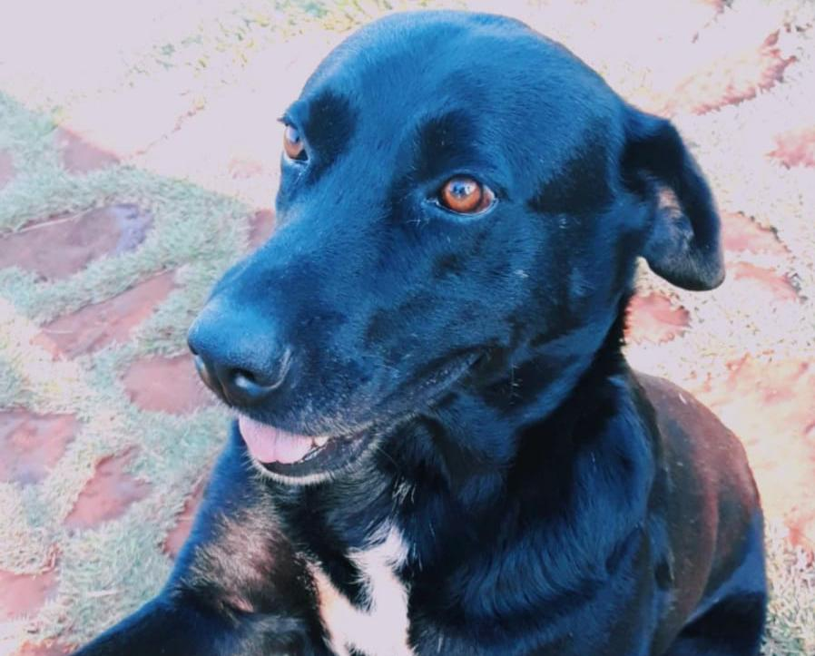

Como a órbita lunar é uma elipse, e não um círculo perfeito, assim como as outras fases, a Lua cheia pode localizar no ponto mais próximo da Terra, Perigeu, ou mais distante, Apogeu.

Lua quarto Minguante
Jun 7
A Lua minguante ou quarto minguante é o último estágio das fases da Lua. Neste período, ela encontra-se no formato de um semicírculo e assim. Nesta fase, a Lua nasce aproximadamente à meia-noite e se põe aproximadamente ao meio-dia.
Sem lua (lua nova)
Jun 11
Nessa altura, a face não iluminada da Lua está virada quase diretamente para a Terra, de modo que não é visível a olho nu.
A lua de manhã
Jun 06
Às vezes vemos a Lua durante o dia pela mesma razão que a vemos à noite; ela reflete a luz do Sol, e sua proximidade com a Terra a torna mais brilhante do que o céu diurno ou noturno.